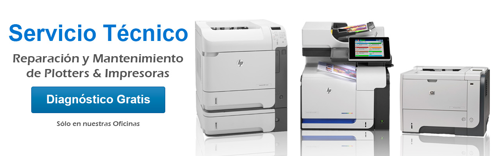
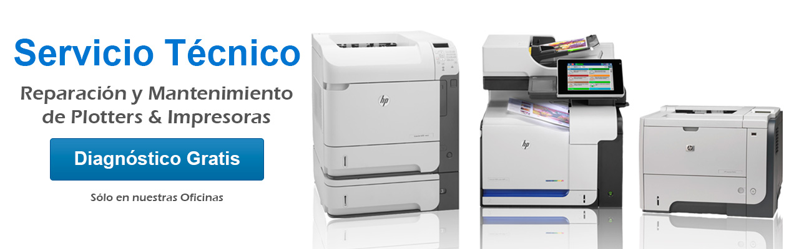

Servicios
Reparación y mantenimiento de impresoras y plotters, de las siguientes maquinas.
- CANON
- RICOH
- KONICA
- MATRICIALES
- INKJET
- LASER
Proveer un servicio técnico de alta calidad, eficiente y confiable que garantice el óptimo funcionamiento de las impresoras, mejorando la satisfacción del cliente y prolongando la vida útil de los equipos.
Establecer un tiempo máximo de respuesta de 24 horas para atender solicitudes de servicio técnico. Implementar un sistema de gestión de tickets para rastrear y priorizar las solicitudes de los clientes.
Asegurar que al menos el 95% de las reparaciones se realicen correctamente en la primera visita. Utilizar repuestos originales y herramientas especializadas para garantizar la calidad de las reparaciones.
 
